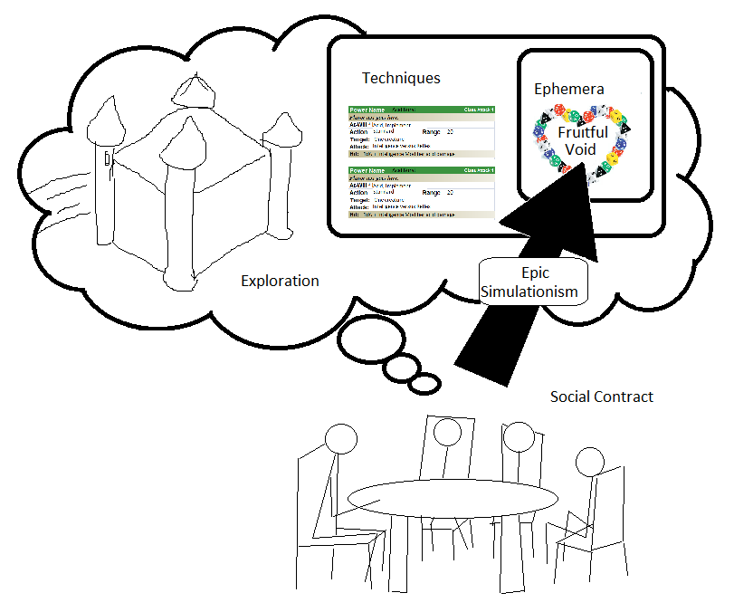

Here's a thought - ASSESSMENT
In D&D, it's all about rolling against AC's, DC's, target numbers of all
sorts. The level of the threat can be immediately, accurately judged by the
players. The Dungeon Master can hide the AC or challenge rating or whatever,
but after a few pass/fail rolls, the challenge rating is pretty obvious.
E.G. the AC is 18, I have an attack bonus of +5, so it's going to be a
difficult but not unreasonable challenge.
In our current game, the challenge rating is masked to some degree. Each
player will roll against their own unique probability to defeat a challenge.
For example, against the same defence score of 100, a fighter with attack
120, a cleric with attack 100, and a wizard with attack 50 might have hit
probabilities of approximately 70%, 50%, and 30%, respectively. However, as
with D&D, the players will either need to be given the challenge rating
to construct the probability, or the DM may try to hide it but the players
can roughly guess the true value through a few die roll trials.
We can make it more interesting!
Firstly, an idea I was already considering anyway: we allow the target
number to vary in competition-type challenges, IE PC-vs-PC or PC-vs-NPC.
The characters will fight like a tug-of-war to push the combat or challenge
in their favour. (This can also be done with PC-vs-non character challenge,
such as using a rope to climb a wall, but the target doesn't resist and only
can probably make it easier.) This also gives a *reason* to fight to your
best beyond simply the usual "button mashing" to win the combat.
Secondly, a new bit - ASSESSMENT - The players are never necessarily told
the ACTUAL challenge value. They're only told their character's ASSESSMENT
of the challenge. Basically, a more or less educated guess. The Dungeon
Master has an ACTUAL target value, and the players' respective GUESSES.
He alone is responsible for telling players whether they succeeded the
challenge based upon their rolls.
The most obvious pro is that the challenge suddenly becomes a PLAYER fight,
not a DICE fight. The players have to take proactive steps to increase the
odds in their favour. This was true from the first idea I was considering
anyway, but by removing the KNOWN challenge rating, this becomes even more
important. This becomes true even for static (player versus non-character)
challenges.
This has pros and cons. One con is that it robs the democritization of the
combat wheel that was previously given to the game. This means that players
can't construct their own probabilities. This may mean it puts too much
responsibility on the Dungeon Master. He has always been the center of the
game, providing descriptions and confirming challenges, but players couldn't
even determine the challenge ratings on their own.
The second pro is that by pushing ASSESSMENT into a primary role in the
game, alongside the actual challenge resolution mechanic itself, suddenly it
is in the players' best interests to ENGAGE and INTERACT. Gather evidence to
increase the odds that their assessment is accurate. If their assessment is
not accurate, they could quickly and easily wind up in serious trouble.
A third pro is that it allows a separation of RAW TALENT and LEARNED SKILL,
a distincion which is very important but utterly lost in traditional
D&D.
-
RAW TALENT might be the character's bare score; for example, a fighter's
bare Longsword Skill of 100 points. It may otherwise be the character's
proclivity to learn certain skills; for example, an athletic child may
find learning Physical skills is a lot faster for him, e.g. the Mean and
Deviation of learning (discussed below) are reduced.
-
LEARNED SKILL would be a combination of a bare score bonus (e.g. +50 to
Longsword Skill) plus an Assessment Score which may increase their
"pull" or statistical variability in the challenge tug-of-war. A higher
Assessment Score means they'll assess the challenge rating of another
Longsworder with greater accuracy. Their ability to probe challenges
prior to the beginning of the challenge will increase, so they're better
able to determine which combats they should walk away from.
To increase the utility of the Assessment Scores, all learned skills should
follow the same generic pattern; the NORMAL FUNCTION. However, they will
each have their own shapes defined by the Mean and Deviation. Simple skills
that anyone can pick up will have a low mean and small deviation (implying
it can be learnt fast). Tough skills require education or training, and
have high means and wide deviations (implying it requires much, much
training from a master).
This idea is just the bare bones and needs to be fleshed out, but I could
see it being the second core mechanic. Most games have only one core
resolution mechanic, but this second core mechanic will be equally
important as the resolution mechanic itself.
Something that may help - the Dungeon Master may be given a sheet, like a
character sheet but one-time use for combat or certain challenges. It
allows the GM to write down the player's respective scores, factor in
assessment variations, and rapidly produce players' Assessments (educated
guesses) of challenge scores as well as their real (unspoken but rolled
against) challenge scores. In this way,
